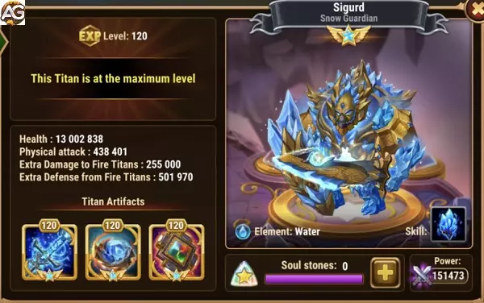

Ilustração de Sigurd, um personagem do jogo Hero Wars Alliance, desenvolvido pela Nexters. (Fundo Gerado por IA)
Guia do Titã Sigurd Hero Wars Mobile
By: Alexandre Domingos. Last updated: April 14, 2024.
Atributos Principais
Atributo
Detalhes
Posição
Linha de Frente
Função
Tanque
Elemento Principal
Água
Tier List 2024
Uso
Classificação
Tier List de Titãs
S
Tier List de Masmorra
S+
Sinergia:
Todos os Titãs, especialmente do Elemento Água
Guia para Usar Sigurd em Hero Wars Alliance
Sigurd é um tanque do elemento Água em Hero Wars Alliance, conhecido por suas habilidades defensivas de alto nível. Mesmo com novos titãs tanque como Rigel (elemento Luz) e Brustar (elemento Escuridão)
, Sigurd ainda é uma ótima escolha tanto para batalhas PvP quanto para exploração de masmorras.
Visão Geral das Habilidades: Égide de Gelo
A habilidade Égide de Gelo de Sigurd é uma das melhores em Hero Wars Alliance porque o torna completamente imune a danos por 5 segundos. Mesmo com novos titãs, Sigurd permanece um tanque de topo para PvP e masmorras.
Efeito da Égide de Gelo: Levanta o escudo e se torna imune a qualquer dano por 5.0 segundos.
Quando Usar a Habilidade de Sigurd
Melhor utilizada em momentos chave para bloquear danos pesados ou durante habilidades ultimates do inimigo.
Batalhas Manuais com Sigurd no PvP
Observe as Habilidades dos Inimigos: Preste atenção nos grandes ataques dos titãs inimigos. Use a Égide de Gelo pouco antes de serem atingidos pela habilidade mais forte deles.
Absorva o Dano: Use a Égide de Gelo para absorver dano na luta, dando tempo para seus outros titãs se prepararem para seus ataques ou buffs.
Bloqueie Dano de Explosão: Se a equipe inimiga tiver alto dano de explosão, a imunidade de Sigurd pode bloquear o dano maior, dando uma vantagem à sua equipe.
Exploração de Masmorras com Sigurd
Sigurd é essencial em masmorras, especialmente para farmar ouro infinito. Aqui está o porquê:
Poder de Permanência: A Égide de Gelo dá 5 segundos de invencibilidade, permitindo que sua equipe cure e ataque sem se preocupar com Sigurd recebendo golpes.
Combinação de Cura: Combine Sigurd com o Titã de Água Hiperião, que pode curar, ou outros Titãs Curandeiros. O período de invencibilidade permite que os curandeiros façam seu trabalho sem interrupção.
Impulso de Artefato: Priorize Sigurd com artefatos de cura e vida para aumentar sua durabilidade, tornando-o o melhor tanque para longas incursões em masmorras.
Composição de Equipe com Sigurd para Masmorras
Para melhores resultados nas masmorras com Sigurd, considere esta configuração de equipe:
Vanguarda: Sigurd (Água) – Tanque principal com Égide de Gelo.
Curandeiro: Hiperião (Água) - Super Titã com ótima habilidade de cura.
Suporte: Mairi (Água) – Fornece debuffs aos inimigos.
Distribuidores de Dano: Nova (Água) – Causa dano e atordoa os inimigos.
Slot Flexível: Titãs Curandeiros Iyari e Avalon ou outro Titã que complemente a estratégia da equipe.
Guia para Melhorar as Skins de Sigurd em Hero Wars Alliance
Sigurd, o tanque do elemento Água, é um Titã chave em Hero Wars Alliance. Melhorar suas skins adequadamente pode aumentar significativamente seu desempenho tanto em batalhas PvP quanto na exploração de masmorras. Aqui está um guia para priorizar suas melhorias de skin.
Prioridade para Melhorias de Skin
Skin de Vida
Razão: Aumentar a vida aumenta significativamente a capacidade de sobrevivência de Sigurd nas batalhas, tornando-o um tanque mais forte.
Estatísticas no Nível Máximo: +2.627.975 de vida
Defesa Extra contra Titãs de Fogo
Razão: Esta skin fornece defesa adicional contra Titãs de Fogo, aumentando a durabilidade de Sigurd em batalhas contra inimigos do elemento Fogo.
Estatísticas no Nível Máximo: +401.470 de Defesa Extra contra Titãs de Fogo
Tabela das Skins de Sigurd
Tabela: Prioridade das Skins de Sigurd
Nome da Skin
Estatísticas no Nível Máximo
Vida
+2.627.975 de Vida
Defesa Extra contra Titãs de Fogo
+401.470 de Defesa Extra contra Titãs de Fogo
Seguindo esta prioridade, você pode garantir que Sigurd permaneça um tanque resiliente em vários cenários de batalha. Maximize primeiro sua vida para uma sobrevivência geral, e depois concentre-se em sua defesa contra inimigos específicos para fortalecer ainda mais a estratégia de sua equipe.
Guia para Melhorar os Artefatos de Sigurd em Hero Wars Alliance
Sigurd, o tanque do elemento Água, é um Titã crítico em Hero Wars Alliance. Melhorar seus artefatos na ordem correta pode fazer uma grande diferença nas suas batalhas. Aqui está a melhor estratégia para priorizar as melhorias dos artefatos de Sigurd.
Prioridade para Melhorias de Artefatos
Selo de Defesa
Razão: Aumentar o Ataque Físico e a vida é essencial para Sigurd causar mais dano e sobreviver mais tempo nas batalhas.
Estatísticas no Nível Máximo:
Ataque Físico: +82.500
Vida: +4.575.000
Égide de Siungur (Artefato de Arma)
Razão: Este artefato não apenas aumenta a regeneração de vida de Sigurd, mas também desencadeia um efeito quando Sigurd usa sua habilidade Égide de Gelo, dando bônus de regeneração de vida para toda a equipe por 9 segundos.
Estatísticas no Nível Máximo:
Regeneração de Vida: +100.050
Chance de Ativação: 100%
Coroa da Água
Razão: Fornece dano extra aos Titãs de Fogo e defesa extra contra Titãs de Fogo, tornando Sigurd mais eficaz contra inimigos do elemento Fogo.
Estatísticas no Nível Máximo:
Dano Extra contra Titãs de Fogo: +255.000
Defesa Extra contra Titãs de Fogo: +100.500
Estratégia Passo a Passo
Melhore o Selo de Defesa: Comece maximizando o Selo de Defesa. O grande aumento na vida e no ataque físico tornará Sigurd um tanque muito mais forte e o ajudará a causar mais dano.
Melhore a Égide de Siungur: Em seguida, concentre-se na Égide de Siungur. A regeneração de vida é crucial para a sobrevivência, e o efeito de bônus de atributos é inestimável nas batalhas.
Melhore a Coroa da Água: Finalmente, melhore a Coroa da Água. Isso ajudará Sigurd a ter um desempenho melhor contra os Titãs de Fogo, adicionando benefícios ofensivos e defensivos.
Tabela Resumida
Artefato
Estatísticas no Nível Máximo
Selo de Defesa
+82.500 Ataque Físico, +4.575.000 vida
Égide de Siungur
+100.050 Regeneração de Vida, 100% Chance de Ativação
Coroa da Água
+255.000 Dano Extra contra Titãs de Fogo, +100.500 Defesa Extra contra Titãs de Fogo
Seguindo essa estratégia de melhoria dos artefatos de Sigurd, você garantirá que Sigurd permaneça um tanque poderoso e resiliente, capaz de liderar sua equipe à vitória tanto em batalhas PvP quanto em masmorras.

Artefatos de Sigurd, Hero Wars Alliance.
Melhores Equipes com Sigurd em Hero Wars Alliance
A tabela abaixo mostra as melhores e mais populares equipes atuais para Sigurd:
Tabela: Melhores Equipes com Sigurd
#
Titãs
1
Tenebris, Keros, Mort, Brustar, Sigurd
2
Tenebris, Keros, Mort, Solaris, Sigurd
3
Tenebris, Keros, Mort, Iyari, Sigurd
4
Amon, Solaris, Iyari, Rigel, Sigurd
5
Tenebris, Amon, Solaris, Iyari, Sigurd
6
Tenebris, Mort, Solaris, Iyari, Sigurd
Conclusão do Guia de Sigurd em Hero Wars Alliance
Para os novatos em Hero Wars Alliance, Sigurd é um tanque crucial para se concentrar. Priorizar sua Skin de Vida e Defesa Extra contra Titãs de Fogo garante que ele possa suportar danos significativos. Melhorar seu Selo de Defesa aumenta sua vida e ataque, tornando-o um tanque mais forte. A Égide de Siungur melhora sua regeneração de vida e fornece um buff para a equipe, enquanto a Coroa da Água aprimora sua eficácia contra Titãs de Fogo.
A durabilidade e as habilidades de suporte de equipe de Sigurd o tornam indispensável para novos jogadores, ajudando-os a progredir mais rápido e enfrentar desafios mais difíceis. Foque em melhorar Sigurd, e você terá um tanque confiável liderando sua equipe à vitória. Boa sorte no jogo!
Sugestões de Vídeo:
Vídeo: Como subir de nível as skins dos Titãs, Hero Wars Alliance.(Legendado)
Você gostou do nosso Guia do Sigurd? Há algo que não entendeu ou gostaria de sugerir mudanças? Convidamos você a se juntar à nossa sessão de comentários na página do Alexandre Games Blog. Não hesite em expressar sua opinião, clarificar suas dúvidas e compartilhar sua sugestões. Clique no botão abaixo para começar:

 Super Titã Tenebris Hero Wars
Super Titã Tenebris Hero Wars